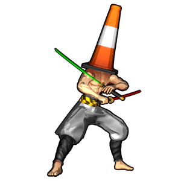

Cone Head
背景

他被称为人类内心对交通法规抗争的显化。一个永远存在却鲜少被看见的战士。遵循法律之道者无需见证他的意志。他的黄色刀刃名为 J艒d艒-t艒，是对违规者的警告，只展示交通执法之怒的一小部分。为了教授正确道德，都市武士会再拔出两把刀，Teirei-t艒 与 Shinrei-t艒，它们的刀刃分别为红色与绿色。
学会遵循法律之道的人将毫发无伤。
策略
Cone Head 的主要招式组使用交通灯机制：绿灯时移动、红灯时停下，以躲避他的攻击。第一阶段中，他会使用三把剑之一攻击对手，偶尔传送到对手身后，或用交通灯攻击覆盖战场大部分区域。如果没有正确遵守规则，会受到毁灭性伤害。约 30% HP 时，剑会从他手中飞出，他进入近战子阶段，追逐并拳击对手直到被击败。
被击败后，他会进入第二阶段，拔出剩下两把剑，并完全发挥交通灯机制。现在他的每次斩击都会是红色或绿色，分别需要通过不移动或移动来躲避。他的大型交通灯 AoE 攻击现在会打击 3 次，迫使对手记住灯光顺序，否则会承受大量伤害。
统计
基础 HP：20000
伤害：物理
该 Boss 由两个阶段组成。
| 属性 | 抗性 |
|---|---|
| 物理 | 中性 (1x) |
| 火焰 | 中性 (1x) |
| 冰霜 | 中性 (1x) |
| 电击 | 中性 (1x) |
| 光耀 | 抗性 (0.7x) |
| 暗影 | 弱点 (1.3x) |
| 毒 | 中性 (1x) |